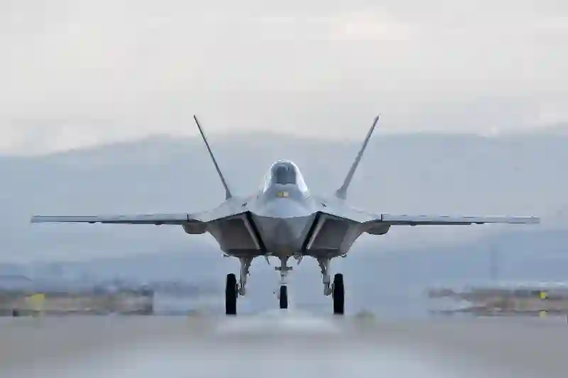
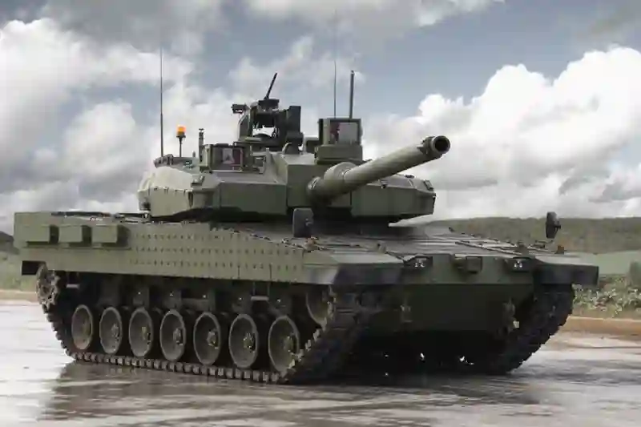
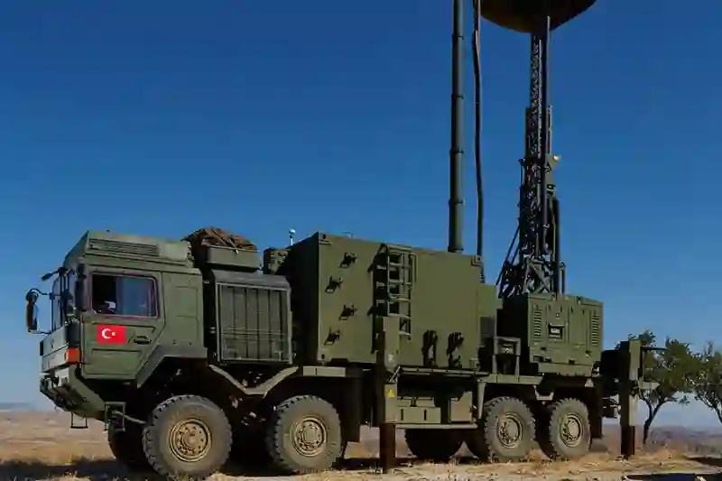
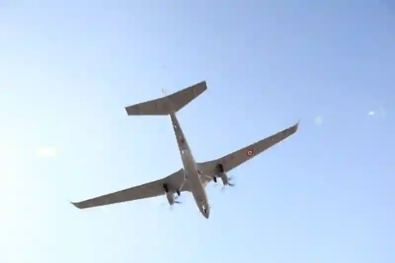
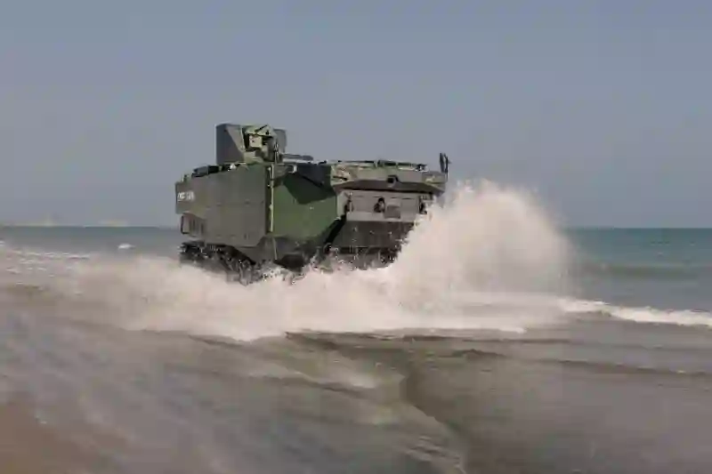
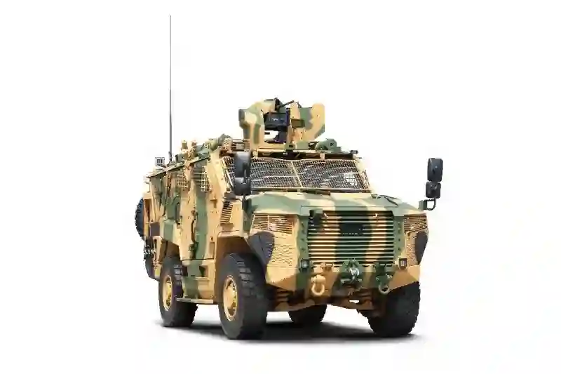
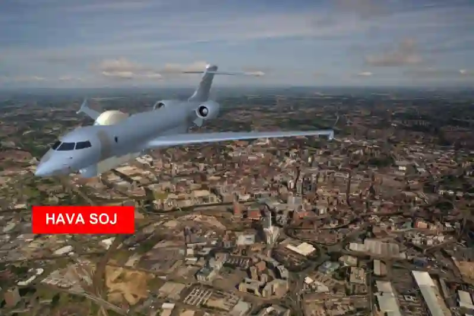

Savunma Sanayi Talaşlı İmalat ve CNC Üretim Çözümleri
Savunma sanayinin beklentileri gereği, proje bazlı imalat süreçlerimizde tasarımdan prototipe, seri üretimden kaynak–montaj entegrasyonuna kadar tüm adımlar kontrollü şekilde yürütülmektedir. Özellikle savunma sanayi talaşlı imalat alanındaki uzmanlığımız, farklı mühendislik disiplinlerinin talep ettiği tolerans seviyelerini karşılayacak biçimde sürekli olarak iyileştirilmektedir. Bu yaklaşım, kritik görev yüklenen askeri platformlarda kullanılan parçaların güvenle çalışmasını sağlar.
Savunma teknolojilerinin gelişimi, askeri sistemlerin güvenilirliği ve operasyonel verimliliği açısından yüksek hassasiyetli mekanik üretimi zorunlu kılar. Aymaksan Makine olarak savunma projeleri için özel olarak yapılandırılmış üretim altyapımız, nitelikli mühendislik yaklaşımımız ve yüksek hassasiyet standartlarımızla, savunma sektöründe ihtiyaç duyulan kritik parçaların imalatını büyük bir titizlikle gerçekleştiriyoruz.
Savunma Sanayi CNC İşleme Çözümleri: Yüksek Hassasiyet Standartları
Savunma projelerinin ihtiyaç duyduğu mekanik bileşenler, sadece standart CNC işleme yöntemleriyle değil; doğru malzeme davranışı, tolerans hesapları, yüzey pürüzlülüğü kontrolü ve ölçüsel doğruluk gerektiren özel bir üretim modeliyle hayata geçirilir. Aymaksan Makine’nin savunma sektörüne yönelik sunduğu savunma sanayi CNC işleme çözümleri, hem düşük adetli prototip hem de yüksek tekrarlı seri üretim için optimize edilmiştir.
Üretim parkurumuzdaki DAHLIH, PUMA, SB-20R ve TOS SUI 50 gibi güçlü tezgahlarla, füze sistemlerinden elektro-mekanik bileşenlere, zırhlı araç bağlantı parçalarından radar sistem parçalarına kadar geniş bir yelpazede üretim gerçekleştiriyoruz. Bu bölümde “Google Ads anahtar kelimesi” gerekliliğini sağlamak için yalnızca bir kez savunma sanayi cnc imalat terimi geçmektedir.





Savunma Sanayi Prototip Parça Üretimi ve Ar-Ge Odaklı Yaklaşım
Yeni geliştirilen savunma sistemlerinde hızlı prototipleme, tasarım doğrulama ve fonksiyon testleri kritik öneme sahiptir. Aymaksan Makine’nin savunma sanayi prototip parça üretimi kabiliyeti, Ar-Ge ekiplerinin ihtiyaç duyduğu hız, doğruluk ve veri tekrarlanabilirliğini sağlayacak şekilde tasarlanmıştır.
Prototip süreçlerinde yüzey kalitesi, ısıl işlem sonrası tolerans koruması, CAD–CAM uyumluluğu ve simülasyon doğrulaması gibi aşamalar titizlikle yürütülür. Gerek elektronik sistemler için küçük ölçekli metal bileşenler gerekse mekanik aktarma elemanları için yüksek dayanımlı parçalar bu kapsamda işlenebilir.
Savunma Sanayi Hassas Mekanik İmalat Kapasitesi
Askeri sistemlerde kullanılan parçaların neredeyse tamamı, görev sırasında yüksek yük altında çalışır. Bu nedenle savunma sanayi hassas mekanik imalat süreçlerimizde yüzey pürüzlülüğü, H7–H8 tolerans seviyeleri, eksen merkezleme doğruluğu ve malzeme bütünlüğü gibi unsurlar özel kontrol yöntemleriyle doğrulanmaktadır.
Radar anten mekanizmaları, füze ateşleme sistemleri, drone bağlantı bileşenleri, silah sistemlerinin mekanik parçaları gibi birçok kritik ürün için uygun üretim gerçekleştirilebilmektedir
Savunma Projeleri için Özel Parça İmalatı ve Alt Yüklenici Çözümler

Savunma sanayinde her projenin kendine özgü gereksinimleri vardır. Bu sebeple savunma projeleri için özel parça imalatı, Aymaksan’ın proje yönetimi, dokümantasyon kontrolü ve izlenebilirlik yetenekleri ile bütünleşik şekilde yürütülür.
Alt yüklenici ihtiyaçlarını karşılayan kapsamlı üretim modelimiz sayesinde, yüksek hassasiyet gerektiren mekanik parçalar uygun tolerans aralıkları içinde üretilir ve kalite kontrol raporlarıyla teslim edilir. Ayrıca içerikte yalnızca bir kez geçmesi gereken Google Ads anahtar kelimesi olan askeri parçalar cnc işleme terimi burada kullanılmıştır.
Projeni Başlat
Savunma Sanayi İçin CNC Tornalama ve Yüksek Hassasiyetli Üretim Kapasitesi
Savunma sanayinin karmaşık mekanik gereksinimleri, yüksek eksen doğruluğuna sahip güçlü CNC torna tezgahlarının kullanımını zorunlu kılar. Aymaksan Makine olarak üretim parkurumuzda bulunan PUMA 280L, TOS SUI 50 Universal Torna ve küçük çaplı işleme için optimize edilen SB-20R Tip G gibi tezgahlarla, savunma projelerinin ihtiyaç duyduğu tüm boyut aralıklarında üretim gerçekleştirebiliyoruz. Bu kapsamda sunduğumuz savunma sanayi CNC işleme çözümleri, hem prototip aşamasında hem de seri üretim döneminde aynı hassasiyet seviyesini koruyacak biçimde yapılandırılmıştır.
Özellikle füze irtifa kontrol sistemlerinde kullanılan miller, zırhlı araçların bağlantı ve mafsal bileşenleri, elektro-mekanik sistemlerde yer alan küçük çaplı metal parçalar ve radar anten kinematik parçaları, hassas tornalama gerektiren kritik ürün gruplarıdır. Bu tür uygulamalarda, eksen kaçıklığı toleranslarının mikron seviyesinde tutulması zorunludur. Bu nedenle Aymaksan’ın savunma sanayine sunduğu askeri sistemler için CNC işleme süreçleri, hatasız ölçü tekrarlanabilirliği sağlayan kalite kontrol mekanizmalarıyla desteklenmektedir.
Küçük Çaplı Askeri Parçalar İçin Kayar Otomat Üretimi
Savunma projelerinde kullanılan birçok bileşen, küçültülmüş gövdeler, çoklu kanallı geçişler ve dar toleranslı bağlantı yüzeyleri içerir. SB-20R Tip G Kayar Otomat Tezgahımız, özellikle küçük çap askeri parçalar için kayar otomat üretimi gerektiren uygulamalarda üstün performans sağlar. Elektronik harp sistemlerinde kullanılan minyatür metal bileşenler, füze ateşleme sistemlerinin ara bağlantı elemanları ve insansız hava araçlarındaki kritik mikro parçalar bu üretim kapasitesinin temel çıktılarıdır.
Bu teknoloji sayesinde, yüksek adetli üretimlerde bile yüzey kalitesi ve ölçü hassasiyeti korunur; bu da savunma sanayinin güvenlik ve dayanıklılık standartlarını karşılamak açısından son derece önemlidir. Özellikle savunma elektronikleri için gerekli olan minyatür parçalar, seri üretimde dahi geometrik bütünlüğünü kaybetmeden işlenebilir.
Büyük Çap ve Uzun Parçalar İçin Universal Torna İşleme
Universal torna tezgahlarının savunma sanayindeki önemi oldukça yüksektir çünkü birçok askeri platform, yüksek dayanımlı parçalar kullanır. TOS SUI 50 Universal Torna, bu nitelikteki ürünlerin kusursuz işlenmesi için stratejik bir tezgâh niteliğindedir. Bu kapsamda sunduğumuz savunma sanayi hassas mekanik imalat çözümleri, büyük çaplı yüzeylerin özel toleranslarda işlenmesini mümkün kılar.
Özellikle:
- zırhlı araç torsiyon milleri
- geniş çaptaki silindirik gövdeler
- top mekanizmalarının yataklama parçaları
- füze ve roket sistemleri için uzun miller
gibi ürün grupları, universal tornalama kabiliyetimizin savunma sanayi üretim zincirine katkı sağladığı kritik komponentlerdir.
Savunma Sanayi İçin CNC Dik İşleme ve Yüksek Hassasiyetli Frezeleme
Savunma projeleri, çoğu zaman kompleks geometriye sahip blok parçalar, yüksek dayanımlı alaşımlar ve 3 eksen üzeri çoklu işlem gerektiren üretimler içerir. Aymaksan Makine’nin dik işleme merkezinde yer alan DAHLIH MCV-1450, savunma sanayi için ideal bir çözüm altyapısı sunar. Bu doğrultuda geliştirdiğimiz savunma sanayi için dik işleme merkezi üretimi, yüzey bütünlüğü ve tolerans koruması açısından sektörel beklentilerin üzerinde performans sergiler.
Radar sistemlerinin gövde parçaları, stabilizasyon mekanizmalarının metal blokları, elektro-optik faaliyetlerde kullanılan taşıyıcı parçalar ve füze yönlendirme modüllerine ait bağlantı tabanları, bu teknolojiyle üretilebilen başlıca bileşenler arasındadır. Her parçanın geometrik bütünlüğü, simülasyon destekli CAM programlaması ile işleme öncesinde doğrulanarak hatasız üretim sağlanır.
Askeri Elektronik Sistemler İçin Yüksek Hassasiyetli Frezeleme

Askeri elektronik sistemler, çok düşük tolerans seviyelerinde işlenmiş mekanik bileşenlere ihtiyaç duyar. Bu nedenle üretim süreçlerimizde, yüksek hassasiyet gerektiren bileşenler için özel kesici takımlar, düşük titreşimli işleme parametreleri ve doğru soğutma stratejileri uygulanır. Bu üretim modelinin temelini oluşturan askeri elektronik sistem bileşenleri CNC işleme kabiliyeti, savunma sanayinin elektronik alt sistemlerinde kullanılan metal parçaların kalite gereksinimlerini kusursuz biçimde karşılar.
Özellikle drone sistemleri, komuta-kontrol cihazları, anten mekanizmaları ve sinyal işleme modülleri gibi ürünlerde kullanılan metal ara bağlantı parçaları, yüksek hassasiyetli frezeleme ile üretilmektedir.
Savunma Sanayi İçin TIG ve MIG/MAG Kaynak Çözümleri
Savunma sanayine yönelik imalat süreçleri yalnızca talaşlı imalatla sınırlı değildir; birçok projede yüksek mukavemet gerektiren kaynaklı parçalar da kullanılır. Aymaksan Makine’nin TIG ve MIG/MAG kaynak altyapısı, askeri uygulamalarda tercih edilen dayanıklı metal birleşimlerini mümkün kılar. Bu kapsamda sunduğumuz savunma sanayi TIG kaynak çözümleri, alüminyum alaşımlarından paslanmaz çeliklere kadar geniş bir malzeme grubunda yüksek kalite sağlar.
Gedik Fronius 304 ve PoWerPlus TIG 320 AC/DC Pulse gibi makinaların parkurumuzda yer alması, savunma projelerinde kullanılan tüm kaynaklı bileşenlerin istenen dayanım standartlarında üretilmesine olanak tanır. Kaynak sonrası gerilim giderme işlemleri ve yüzey temizliği gibi süreçler de kalite standartlarımızın ayrılmaz bir parçasıdır.
Projeni Başlat
Savunma Sanayi Kalite Kontrol ve Ölçüm Hizmetleri
Savunma sanayinde üretimin güvenilir şekilde ilerleyebilmesi için kalite kontrol süreçlerinin yalnızca doğrulama odaklı değil, üretimin her aşamasına entegre edilmiş olması gerekir. Aymaksan Makine’nin uyguladığı kalite sistemi, hem manuel hem de CNC tezgahlarda üretilen parçaların ölçüsel doğruluğunu garanti edecek şekilde yapılandırılmıştır. Bu kapsamda sunduğumuz savunma sanayi kalite kontrol ve ölçüm hizmetleri, her parçanın istenen tolerans aralığında üretildiğini belgeleyen kapsamlı bir denetim sürecini içerir.
Kumpas, mikrometre, diyal göstergeleri, yüzey pürüzlülüğü cihazı ve CMM ölçüm ekipmanlarıyla gerçekleştirilen doğrulamalar, savunma projelerinde kullanılan parçaların güvenle sahaya sürülmesini sağlar. Kalite kontrol verileri kayıt altına alınarak izlenebilirlik oluşturulur; böylece proje takımlarının ihtiyaç duyduğu tüm dokümantasyon eksiksiz olarak karşılanır. Bu yapı, özellikle savunma sanayi hassas mekanik imalat gerektiren projelerde stratejik bir avantaj yaratır.
Tolerans Yönetimi, Yüzey Pürüzlülüğü ve Malzeme Bütünlüğü Kontrolleri
Askeri uygulamalarda kullanılan parçalar, çalışmalarını genellikle yüksek yük, titreşim ve çevresel zorluk altında sürdürür. Bu sebeple tolerans hesaplamaları, yüzey kalitesi ve malzeme dayanım değerleri üretim sürecinin en kritik aşamalarıdır. Aymaksan Makine olarak savunma sanayi projelerinde savunma projeleri için özel parça imalatı süreçlerini ISO standartlarına uygun kalite kontrol yöntemleriyle destekliyoruz.
Yüzey pürüzlülüğü kontrolleri Ra 0.8 – Ra 3.2 seviyelerinde yapılandırılabilir; bu değerler özellikle füze yönlendirme mekanizmaları, robotik askeri sistemler ve elektro-optik platformlarda kullanılan parçalar için kritik öneme sahiptir. Malzeme bütünlüğü ise farklı sertlik testleri ve görsel muayene teknikleriyle doğrulanır. Bu süreçler, üretimin sürdürülebilir kalite prensibiyle ilerlemesine olanak tanır.
Savunma Sanayi Projelerinde Dokümantasyon ve İzlenebilirlik
Savunma sanayinde her parçanın üretim geçmişi incelenebilir olmalıdır. Bu nedenle Aymaksan Makine, tüm üretim süreçlerinde dokümantasyon ve izlenebilirliği standart hale getirmiştir. Kullanılan ham madde sertifikalarından ısıl işlem raporlarına, ara kontrol formlarından son teslim kalite dokümanlarına kadar tüm veriler proje klasörlerinde toplanır.
Bu süreç, özellikle savunma sanayi alt yüklenici üretim hizmeti gerektiren projelerde büyük önem taşır. Çünkü ana yüklenici firmalar, alt yüklenicilerinin ürettiği parçaların her bir aşamasına ilişkin doğrulanabilir bilgilere ulaşmak ister. Aymaksan’ın bu konudaki yaklaşımı, hem şeffaflık sağlar hem de kalite güvence mekanizmasının temelini oluşturur.
Savunma Sanayi İçin Proje Yönetimi ve Teknik Koordinasyon
Savunma projeleri çoğu zaman birbiriyle ilintili onlarca parçadan oluşan kompleks bir yapı içerir. Bu nedenle üretim sürecinin yalnızca teknik bir iş değil, aynı zamanda kapsamlı bir proje yönetimi faaliyetidir. Aymaksan Makine, savunma sanayi projelerine özel oluşturduğu proje yönetim modeli ile üretimin her aşamasını planlı ve izlenebilir hale getirir.
Bu sürecin temel adımları şunlardır:
- Teknik çizim analizi
- Üretilebilirlik değerlendirmesi
- Malzeme seçim doğrulaması
- Prototip–seri üretim ayrımı
- Operasyon sırası planlaması
- Kalite kontrol eşleşmeleri
- Termin-gönderim planı
Bu yapı sayesinde hem ana yüklenici firmalar hem de mühendislik ekipleri üretim sürecini yakından takip edebilir.
Savunma Sanayi İçin Üretilebilirlik Analizi
Üretilebilirlik analizi, projelerde hem maliyet verimliliği hem de üretim hızı açısından büyük avantaj sağlar. Bu analiz kapsamında:
- karmaşık geometrili parçaların işleme uygunluğu
- malzeme seçiminin talaşlı imalata etkisi
- toleransların teknik olarak korunabilirliği
- yüzey Kalite gereksinimlerinin işlem süresine etkisi
- prototip ile seri üretim arasındaki parametre farkları
değerlendirilir. Bu süreç özellikle savunma sanayi prototip parça üretimi projelerinde belirleyicidir. Parçanın ilk prototipi üretildikten sonra gerekli revizyonlar yapılarak seri üretimde mükemmel sonuç elde edilir.
Savunma Sanayi İçin Malzeme Yönetimi ve Yüksek Dayanımlı Alaşımlar
Savunma sektöründe kullanılan metaller yalnızca mekanik dayanım açısından değil, ısıl yük, çevresel etkiler, korozyon dayanımı ve titreşim altında stabilite gibi birçok parametreye göre seçilir. Aymaksan Makine’nin üretim süreçlerinde sıklıkla kullanılan malzemeler arasında:
- 7075 – 5083 – 6061 alüminyum alaşımları
- 4140 – 4340 çelik alaşımları
- paslanmaz çelikler
- takım çelikleri
- yüksek dayanımlı bronz ve pirinç alaşımları
yer almaktadır.
Bu malzemelerin işlenmesi, savunma projelerinde kullanılan parçaların güvenlik ve dayanıklılık seviyesini doğrudan etkiler. Bu nedenle savunma sanayi projelerine özel olarak geliştirilmiş işleme parametreleri ve kesici takım stratejileri uygulanır. Bu hassas yaklaşım, savunma sanayi talaşlı imalat süreçlerinin güvenilirliğini artırır.
Isıl İşlem ve Sertlik Kontrolleri
Birçok askeri parçanın performansı, uygulanan ısıl işlem süreçleriyle doğrudan ilişkilidir. Yüksek sertlik gerektiren miller, aşınma dayanımı istenen yüzeyler ve yüksek yük taşıyan parçalar ısıl işlem sonrasında tekrar işlenerek hassas toleranslarına kavuşturulur. Bu aşamada yüzey taşıma hatalarının giderilmesi, ölçülerin yeniden açılması ve sertlik testlerinin doğrulanması kritik öneme sahiptir.
Bu kapsamda Aymaksan Makine, ısıl işlem sonrası yapılan tüm tolerans açma operasyonlarında, yüksek hassasiyet sağlayan tezgahlarıyla savunma projelerinin ihtiyaç duyduğu güvenilir üretim kalitesini ortaya koyar.
Projeni Başlat
Savunma Sanayinde Kullanılan Mekanik Parçalar ve Üretim Gereksinimleri
Savunma sanayinin kapsadığı her alt sistem, benzersiz teknik gereksinimleri beraberinde getirir. Bu nedenle üretim süreçleri yalnızca malzeme işleme kabiliyeti değil; aynı zamanda sistem mühendisliğini, kalite yönetimini ve proje koordinasyonunu içine alan bütünsel bir yaklaşım gerektirir. Aymaksan Makine olarak bu beklentileri karşılamak üzere yapılandırdığımız üretim modeli, savunma projelerinde kullanılan yüzlerce farklı mekanik parçanın işlenmesine olanak tanır. Bu kapsamda öne çıkan ürün gruplarından bazıları, zırhlı araç mekanik aksam imalatı, radar sistemlerinde kullanılan bağlantı parçaları, füze yönlendirme modülleri ve askeri elektronik sistemlerin metal gövdeleridir.
Her bir parçanın üretiminde:
- yüksek ölçü tekrarlanabilirliği
- yüzey pürüzlülüğü kontrolü
- malzeme dayanımı ve ısıl işlem uyumu
- CAD/CAM uyumlu işleme stratejileri
- dar tolerans yönetimi
kritik öneme sahiptir. Bu faktörler Aymaksan’ın savunma sanayine sunduğu savunma sanayi hassas mekanik imalat hizmetlerinin temelini oluşturur.
Füze ve Roket Sistemleri İçin Mekanik Bileşen Üretimi
Füze ve roket sistemlerinde kullanılan parçalar, aerodinamik yapılarla uyumlu, yüksek sıcaklığa dayanıklı ve mikron seviyesinde tolerans gerektiren kritik bileşenlerdir. Bu sistemlerde yer alan mekanik parçaların doğruluğu, yönlendirme performansını ve stabilizasyon sistemlerinin güvenilirliğini doğrudan etkiler. Aymaksan Makine’nin radar ve füze sistemleri mekanik parça üretimi kapsamındaki kabiliyetleri, çok eksenli işleme ve kayar otomat üretim teknolojilerinin birleşimi ile yüksek doğruluk sunar.
Bu bölümde işlenen parçalar genellikle:
- gövde bağlantı elemanları
- kinematik kol mekanizmaları
- modül taşıyıcı bileşenler
- minyatür bağlantı parçaları
- ısıl işlem gerektiren çelik parçalar
gibi yüksek hassasiyetli ürünlerdir. Bu parçaların işlenmesi, savunma projelerinde görev başarısı açısından büyük önem taşır.
Zırhlı Araçlar İçin Yüksek Dayanımlı Mekanik Parça Üretimi
Zırhlı araçlar, yüksek titreşim, darbe ve çevresel zorluklara karşı dayanıklı mekanik bileşenlere ihtiyaç duyar. Bu nedenle üretimde kullanılan malzemeler ve işleme teknikleri standart makine parçalarından farklıdır. Aymaksan Makine’nin sunduğu zırhlı araç mekanik aksam imalatı, büyük çaplı tornalama, yüksek dayanımlı çelik alaşımlarının işlenmesi ve kaynaklı üretim süreçlerinin birleşimiyle gerçekleştirilir.
Bu kapsamda üretilen parçalar:
- torsiyon milleri
- süspansiyon bağlantı bileşenleri
- güç aktarım sistemi parçaları
- şasi bağlantı elemanları
- yüksek dayanımlı mafsal gövdeleri
gibi yüksek yük taşıyan bileşenlerdir. Üretilen her parçanın yüzey sertliği, tolerans aralığı ve malzeme bütünlüğü kalite kontrol süreçleriyle doğrulanır.
Askeri Elektronik Sistemler İçin Mekanik Parça Üretimi
Savunma elektroniği alanında gerçekleştirilen üretimler, mekanik ve elektronik mühendisliğin birleştiği son derece özel bir kategoriyi oluşturur. Bu sistemlerde kullanılan metal bileşenler milimetrik ölçülerin altındaki tolerans seviyelerinde işlenir. Aymaksan Makine, elektronik alt sistemlerin gerektirdiği askeri elektronik sistem bileşenleri CNC işleme kapasitesiyle, savunma elektroniği projelerinde kullanılan taşıyıcı parçaların işlenmesini yüksek hassasiyetle gerçekleştirir.
Bu tür projelerde üretilen parçalar arasında:
- anten mekanizma gövdeleri
- elektronik modül kasaları
- soğutma blokları
- hassas bağlantı yüzeyleri
- özel alüminyum alaşım bloklar
bulunmaktadır. Özellikle 6061 ve 7075 alüminyum alaşımlarının işlenmesi, yüzey kalitesi açısından kritik öneme sahiptir.
İnsansız Hava Araçları (İHA-SİHA) İçin Mekanik Parça Üretimi
İHA ve SİHA sistemleri günümüz savunma teknolojilerinin merkezinde yer almaktadır. Bu sistemlerde kullanılan mekanik parçalar, düşük ağırlık – yüksek dayanım dengesi ve titreşim altında kararlılık gerektiren bir tasarım anlayışıyla üretilir. Aymaksan Makine’nin bu alana sunduğu üretim kapasitesi, askeri sistemler için CNC işleme altyapısı sayesinde hem küçük hem de orta ölçekli parçaların yüksek hassasiyette işlenmesini mümkün kılar.
İHA/SİHA projelerinde üretilen başlıca parçalar:
- gimbal mekanizma bileşenleri
- kamera taşıyıcı modül parçaları
- stabilizasyon mekanizması bileşenleri
- karbon fiber montaj tabanları için ara parçalar
- bağlantı milleri ve gövde bileşenleri
Bu ürünlerin üretiminde hem alüminyum hem de yüksek dayanımlı çelik alaşımları kullanılabilir.
Savunma Sanayinde Entegrasyon Parçaları ve Kaynaklı Üretim
Birçok askeri platform, montaj gerektiren metal parçalarla oluşturulur. Bu parçaların üretiminde talaşlı imalatın yanı sıra yüksek dayanımlı kaynak işlemleri de kullanılır. Aymaksan Makine, savunma projelerine özel geliştirdiği savunma sanayi TIG kaynak çözümleri ile yüksek dayanım gerektiren birleşimleri kusursuz şekilde gerçekleştirir.
Kaynaklı üretimin savunma sanayindeki kullanım alanlarından bazıları:
- zırhlı araç kaporta alt parçaları
- füze fırlatma mekanizması bileşenleri
- elektronik modül kasaları
- ağır hizmet bağlantı tabanları
- güç aktarım sistemi destek bileşenleri
Kaynak sonrası gerilim giderme uygulanması, parçaların çalışma sırasında deformasyona uğramamasını sağlar.
Projeni Başlat
Savunma Sanayi İçin Üretim Süreçlerinde Stratejik Avantajlar
Savunma sanayi, güvenilirlik, hassasiyet ve sürdürülebilir kalite açısından en yüksek teknik gereksinimlere sahip sektörlerden biridir. Aymaksan Makine’nin üretim kabiliyeti, makine parkının donanımı, kalite kontrol sistemleri ve mühendislik yaklaşımı, savunma projelerinde tercih edilmesinde belirleyici bir rol oynar. Bu doğrultuda sunduğumuz savunma sanayi talaşlı imalat çözümleri, yalnızca üretim çıktısı değil, aynı zamanda proje yönetimi, teknik dokümantasyon, izlenebilirlik ve süreç optimizasyonu gibi kritik alanlarda da güçlü bir altyapı sağlar.
Savunma sanayinde kullanılan parçalar çoğu zaman birbirinden çok farklı fonksiyonlara sahip olsa da üretim süreçlerinin ortak paydası; yüksek hassasiyet, malzeme dayanımı, düşük tolerans aralığı ve yüzey kalitesidir. Bu nedenle Aymaksan Makine, savunma projelerinde her bir parçanın fonksiyonuna uygun olarak işleme stratejileri geliştirir. Bu yaklaşım sonucunda savunma sanayi CNC işleme çözümleri, proje ölçeğine göre optimize edilmiş bir üretim modeli sunar.
Entegre Üretim ve Çok Disiplinli Yaklaşım
Talaşlı imalat, kaynaklı üretim, prototip geliştirme, kalite kontrol ve ölçüm süreçlerinin tek bir çatı altında toplanması, savunma projelerinin hızlı, entegre ve kontrollü bir biçimde ilerlemesini sağlar. Bu üretim modeli, özellikle zaman kritik projelerde büyük avantaj yaratır. Örneğin:
- Prototip üretiminden seri üretime geçiş
- Teknik revizyonların hızlı işlenmesi
- Acil operasyonel ihtiyaçlara göre küçük parti üretim
- Entegre kalite formlarıyla süreç şeffaflığı sağlama
Bu yapının temelinde, savunma projelerinde kullanılan parçaların teknik gereksinimlerini analiz eden ve üretim sürecine özel işleme stratejileri oluşturan mühendislik ekibimiz yer alır. Bu nedenle savunma sanayi prototip parça üretimi, diğer üretim hatlarıyla kusursuz bir uyum içinde çalışır.
Sürdürülebilir Kalite ve Uzun Vadeli Çözüm Ortaklığı
Savunma projeleri çoğu zaman uzun soluklu ve tekrar eden üretim süreçlerini kapsar. Bu nedenle üretici firmanın kalite yönetim sisteminin sürdürülebilir olması gerekir. Aymaksan Makine, savunma sanayi projelerine özel geliştirdiği kontrol mekanizmaları ve dokümantasyon süreçleriyle, hem prototip hem de seri üretim dönemlerinde tutarlı kalite seviyesi sağlar.
Bu kapsamda:
- Dar toleransların korunması
- Isıl işlem sonrası ölçü doğrulaması
- Yüzey pürüzlülüğü kontrolü
- Dökümantasyon ve izlenebilirlik
- Malzeme kalite doğrulaması
gibi süreçler sürekli biçimde uygulanır. Bu yaklaşım özellikle savunma sanayi alt yüklenici üretim hizmeti alan projelerde büyük önem taşır.
Savunma Sanayi İçin Geleceğe Yönelik Üretim Stratejileri
Savunma teknolojilerinin hızlı gelişimi, mekanik üretimde de sürekli olarak yenilikçi çözümlerin uygulanmasını zorunlu kılmaktadır. Aymaksan Makine, yeni nesil savunma sistemlerine uyum sağlamak için üretim parkurunu, mühendislik altyapısını ve kalite süreçlerini sürekli güncellemektedir.
Öne çıkan gelişim alanları:
- Daha hassas mikro işleme stratejileri
- Çok eksenli işleme merkezleri için kapasite artırımı
- İleri malzeme davranışları için özel kesici takım çözümleri
- Simülasyon tabanlı üretim planlaması
- Savunma elektroniği için hafif–yüksek dayanımlı parçalar
Bu yaklaşım sayesinde askeri elektronik sistem bileşenleri CNC işleme alanında hem daha küçük hem de daha karmaşık parçalar yüksek doğrulukla üretilebilmektedir.
Savunma Sanayinde Yerli Üretimin Önemi ve Aymaksan’ın Katkısı
Yerli üretim kapasitesi, savunma sanayinin bağımsızlığı açısından stratejik bir öneme sahiptir. Aymaksan Makine, yerli savunma projelerinde kullanılan kritik mekanik parçaların üretimine katkıda bulunarak, hem sektörel ekosistemin güçlenmesine hem de mühendislik kabiliyetlerinin gelişimine destek sağlar.
Bu kapsamda yürütülen çalışmalar:
- yerli savunma projelerine mekanik parça tedariki
- prototip – seri üretim arası geçiş optimizasyonu
- yüksek hassasiyetli özel parça imalatı
- kaynaklı üretim ve montaj çözümleri
- kalite kontrol doğrulama raporlaması
şeklinde özetlenebilir. Tüm bu süreçler, savunma sanayi için dik işleme merkezi üretimi ve askeri sistemler için CNC işleme gibi kabiliyetlerle desteklenmektedir.
Sonuç: Aymaksan Makine ile Savunma Sanayinde Güvenilir Üretim
Aymaksan Makine, savunma sanayine yönelik hassas üretim ihtiyaçlarını karşılamak için oluşturduğu geniş makine parkı, mühendislik yaklaşımı ve kalite yönetim sistemi ile sektörde güvenilir bir çözüm ortağıdır. Savunma projelerinin gerektirdiği dar toleranslar, kompleks geometriler, yüksek dayanımlı malzemeler ve kusursuz dokümantasyon süreçleri, firmamızın üretim modelinin temel unsurlarını oluşturur.
Bu sayfa boyunca ele alınan:
- savunma sanayi talaşlı imalat
- savunma sanayi CNC işleme çözümleri
- savunma sanayi prototip parça üretimi
- savunma sanayi hassas mekanik imalat
- savunma sanayi TIG kaynak çözümleri
- savunma sanayi kalite kontrol ve ölçüm hizmetleri
gibi başlıklar, Aymaksan’ın savunma projelerinde geniş bir üretim yelpazesi sunduğunu göstermektedir.
Projeni Başlat
Şu linklerde yer alan sayfaları ve web sitelerini incelemenizi de tavsiye ederiz.
Dış Kaynaklar
- TÜBİTAK | Türkiye Bilimsel ve Teknolojik Araştırma Kurumu | TÜBİTAK Savunma Sanayi Destekleri
- Savunma Sanayii Baskanlığı | Cumhurbaşkanlığı Savunma Sanayii Başkanlığı
- North Atlantic Treaty Organization | NATO | NATO Teknik Standartları
İç Kaynaklar – Makine Parkımız
- DAHLIH MCV-1450 Dik İşleme Merkezi
- Doosan / DN Solutions PUMA 280L CNC Torna
- TOS SUI 50 Universal Torna
- SB-20R Tip G Otomatik Torna
- PoWerPlus TIG 320 AC/DC Pulse
- VARIO STAR 304-G MIG MAG Kaynak Makinesi
İç Kaynaklar – Hizmetlerimiz